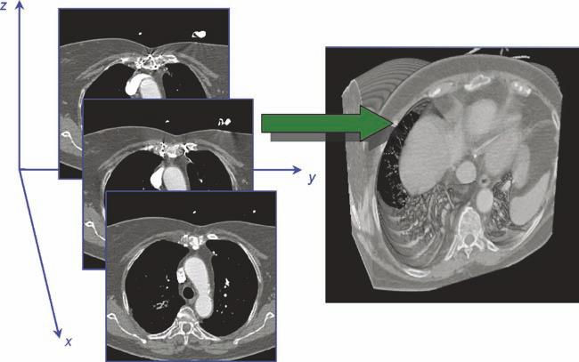

Data publicării: 09.06.2020
Autor articol: Mircea Vaida
1. Redarea de suprafaţă şi de volum
1.1. Redarea de suprafaţă (Surface Rendering)
Surface rendering este un mod de a vizualiza un obiect considerând datele de imagine ca un set de elemente fizice de bază, cum sunt: voxelii, feţele, alte poligoane, segmente de dreaptă şi puncte. Aceste seturi reprezintă fie suprafaţa (marginea) structurii, fie întreaga structură.
Această tehnică vizualizează un obiect 3D ca un set de suprafeţe, numite iso-surfaces. Fiecare suprafaţă conţine puncte care au aceeaşi intensitate (iso-valori) pe toate secţiunile. Această tehnică este utilizată când se doreşte să se vadă suprafeţele unei structuri separate de structurile apropiate, de exemplu vizualizarea craniului din secţiuni ale capului, sistemul sanguin din secţiunile corpului, etc. Este o tehnică utilizată de obicei pentru date cu contrast ridicat.
Pentru reconstrucţia suprafeţelor cu aceeaşi intensitate se utilizează 2 metode principale:
– reconstrucţia bazată pe contur: iso-contururile, care sunt extrase din fiecare secţiune pot fi conectate pentru a crea iso-suprafeţe
– reconstrucţia bazată pe voxel: iso-suprafeţele sunt construite direct din voxeli cu intensitate egală. Unul dintre cei mai buni algoritmi este Marching Cubes. Alţi algoritmi similari: Marching Tetrahedrons şi Deviding Cubes.
Pentru surface rendering există două clase de metode: bazate pe obiect şi bazate pe scenă. Redarea de suprafaţă va fi realizată cu succes numai dacă obiectul de interes este definit clar. În metodele bazate pe obiect acest lucru trebuie realizat într-un pas separat. În cele bazate pe scenă, volumul este transformat în primitive de suprafaţă, afişate apoi ca o geometrie poligonală.
În metodele bazate pe scenă, de obicei se utilizează un prag pentru a specifica obiectul de interes din
scenă. Mai pot fi utilizate şi metode automate, hard, de segmentare bazată pe contururi sau pe regiuni.
O metodă foarte cunoscută de generare a primitivelor din date volumetrice este Marching Cubes. Metoda a fost descrisă prima dată de către Lorensen şi Cline [Lorensen, 1987], unde o suprafaţă cu o valoare de contur specificată este aproximată algoritmic, inclusă într-un set de faţete triunghiulare şi afişată folosind mecanisme grafice standard.
Afişarea constă în 3 paşi de bază: proiecţie, ştergerea părţilor ascunse, colorare. Aceşti paşi suntnecesari pentru a oferi o impresie de tri-dimensionalitate imaginii care este creată. Această impresie poate fi oferită de maparea de textură. În metodele bazate pe obiect, paşii de mai sus pot fi realizaţi în faza definirii obiectului.
În metodele bazate pe scenă, pentru a aduce scena într-un ecran 2D se pot utiliza metodele ray-cast sau splatting. Chiar dacă splatting este mai potrivit pentru redarea de volum decât pentru redarea de suprafaţă, splatting are câteva avantaje faţă de ray-casting şi de aceea uneori este utilizat pentru redarea de suprafaţă.
Dacă se utilizează ray-casting, părţile ascunse sunt îndepărtate prin oprirea la primul voxel întâlnit în lungul fiecărei raze şi care îndeplineşte criteriile de prag. Valoarea de prag trebuie aleasă astfel încât să fie ales voxelul de pe conturul obiectului de interes.
Dacă se utilizează splatting, părţile ascunse pot fi îndepărtate prin proiecţia voxelilor de la cel mai îndepărtat la cel mai apropiat (în raport cu planul de vizualizare) şi suprascriind întotdeauna valoarea culorii (valoarea asignată pixelului). Un avantaj major al tehnicii splatting este că numai voxelii relevanţi din imagine trebuie proiectaţi şi rasterizati. Acest lucru poate reduce semnificativ volumul de date necesar pentru procesare şi stocare, [Mueller, 1999].
Valoarea culorii asignate unui pixel în planul de vizualizare este dependentă de voxelul care se proiectează în acel pixel. Fidelitatea cu care această valoare reflectă forma suprafeţei în jurul voxelului depinde în mare măsură de vectorul normal la suprafaţă în acel voxel.
1.2. Redarea de volum (Volume Rendering VR)
Scopul redării de volum (volume rendering) este de a crea o imagine 2D din valori de eşantioane 3D. Setul de date tridimensionale trebuie transformat într-o imagine semnificativă 2D unde trăsăturile de interes pot fi vizualizate uşor.
Redarea de volum defineşte un model implicit, considerând întreaga regiune a imaginii un volum semitransparent şi atribuind valori de opacitate fiecărui voxel din acea zonă.
Tehnica de redare de volum este utilizată pentru a vizualiza transparenţa întregului volum al obiectului. Se realizează prin proiecţia razelor prin datele volumetrice. De-a lungul fiecărei raze, opacitatea şi culoarea trebuie calculate în fiecare voxel. Apoi informaţia calculată de-a lungul fiecărei raze va fi combinată într-un pixel în planul imaginii. Această tehnică ajută la a vedea întreaga structură compactă a unui obiect. Un dezavantaj al acestei tehnici este cantitatea foarte mare de calcule, care impun o configuraţie puternică pentru calculator. Este o tehnică potrivită pentru datele cu contrast scăzut.
Pentru proiecţia razei pot fi considerate 2 metode de bază:
– metoda Object-order: proiecţia razelor prin volum din spate în faţă (dinspre volum spre planul imaginii).
– Image-order (ordonare după imagine) sau ray-casting: proiecţia razelor prin volum din faţă în spate (dinspre planul imaginii înspre volum). Există câteva metode pentru a compune o imagine, metoda potrivită depinde de scopul utilizatorului. Câteva metode uzuale pentru imaginile medicale sunt: MIP (maximum intensity projection), MinIP (minimum intensity projection), AC (alpha compositing) şi NPVR (non-photorealistic volume rendering).
Pentru volume rendering există 2 procese de bază care trebuie realizate: vizualizare şi clasificare, [Levoy, 1990]). Imaginea finală este obţinută prin combinarea acestor procese, folosind compunerea volumetrică.
Procesul porneşte de la tablourile 3D de date eşantionate. În timp ce datele sunt pregătite, ele sunt organizate într-un grid dreptunghiular. După aceasta are loc colorarea şi clasificarea, independente una de alta. Operaţia de colorare este mai complicată decât la redarea de suprafaţă. Aceasta ia în considerare toate cele 3 componente: transmisia, reflexia şi emisia. În volum rendering fiecare voxel este considerat ca fiind un obiect primitiv cu suprafaţă proprie. Direcţia suprafeţei este determinată prin aproximarea gradientului local al valorilor de voxel. Fiecare voxel este umbrit prin considerarea suprafeţei lui, a vectorului de vizualizare şi surselor virtuale de lumină şi aplicând o operaţie de colorare (de ex. Gouraud sau Phong shading). Valorile de gri sau culoare rezultate pot fi stocate în seturi separate de date pentru obţinerea lor ulterioară.
În procesul de clasificare, volumul este clasificat, adică voxelii se consideră ca fiind transparenţi şi pentru fiecare voxel se asociază o opacitate şi o culoare în funcţie de valoarea sa şi de o funcţie de clasificare.
Prin modificarea funcţiei de clasificare, anumite materiale pot fi ascunse sau evidenţiate. Opacitatea poate lua orice valoare între 0% şi 100%. Opacitatea se determină în funcţie de valoarea efectivă a voxelului şi cât dorim să reflectăm această valoare la vizualizare. Opacităţile pot fi stocate într-un set separat de date pentru folosirea lor ulterioară.
Prin eşantionarea volumului din spate în faţă sau din faţă în spate, volumul este proiectat într-o imagine. Pentru fiecare punct eşantionat pe raza de vizualizare, se combină valorile culorilor şi opacităţilor obţinute în operaţiile de colorare şi clasificare. Aceste valori sunt apoi compuse pentru a obţine valoarea pixelului.
Principiile proiecţiei sunt identice cu cele descrise la surface rendering. Îndepărtarea părţilor ascunse este mai complicată decât la surface rendering. În ray-casting, o metodă este de a îndepărta voxelii situaţi de-a lungul razei de la planul de vizualizare pentru care opacitatea cumulată este mai mare decât un prag maxim (de ex. 90%). În splatting, un voxel poate fi îndepărtat dacă voxelii din jurul său pe direcţia razei de vizualizare au opacitate înaltă.
Proiecţia intensităţii maxime (MIP – Maximum Intensity Projection)
Proiecţia intensităţii maxime (MIP) este o metodă foarte cunoscută de redare de volum [Udupa, 2000], foarte utilizată în vizualizarea imaginilor medicale datorită simplităţii sale. MIP este o tehnică de imagistică volumetrică în care poate fi obţinut foarte uşor un efect de semi-transparenţă. În MIP, la traversarea luminii prin volumul 3D sunt prezentaţi numai acei voxeli care prezintă răspunsul cu cea mai mare strălucire.
Această metodă este ideală pentru date cu contrast mare, la care este importantă vizualizarea structurii interne. Principalul avantaj al MIP este că nu impune nici o segmentare. Această metodă este rapidă, dar rezultatele 2D nu oferă o bună reprezentare a adâncimii datelor originale. Deşi conţine informaţii despre interiorul unui obiect, imaginile rezultate sunt plate vizual şi nu conţin informaţie de adâncime, [Mroz, 2000].
Metodele MIP bazate pe scenă şi cele bazate pe obiect nu prezintă diferenţe mari. Singura diferenţă este ca MIP bazat pe scenă funcţionează direct pe o scenă dată, în timp ce MIP bazat pe obiect operează pe o scenă segmentată; întâi se utilizează o metodă se segmentare pentru a defini structurile, apoi se realizează afişarea cu MIP bazat pe scenă.
Maparea de textură (Texture Mapping )
Maparea de textură înseamnă maparea unei funcţii pe o suprafaţă în spaţiul 3D. Maparea de textură a fost introdusă de E.E. Catmull în anii ‘70, pentru a oferi o mai mare substanţă modelelor computerizate fără adăugare de geometrie. Oferă o metodă de accelerare tehnicilor de volume rendering. Pentru eşantionarea datelor în textură sunt utilizate interpolări biliniare sau triliniare.
Maparea de textură 2D constă în stocarea unei stive de secţiuni de textură 2D pentru fiecare axă majoră de vizualizare. Stiva de secţiuni, care este perpendiculară pe direcţia de vizualizare este selectată pentru mapare. Apoi secţiunile sunt mapate din spate în faţă pe o geometrie de aliniere de obiecte. Principalul dezavantaj este că poate fi utlizată doar interpolarea biliniară pentru eşantionarea datelor în textură şi direcţia de vizualizare determina rata de eşantionare.
Maparea de textură 3D stochează întregul volum ca o textură 3D în GPU. Secţiunile se rasterizează paralel cu planul de vizualizare şi se combină din spate în faţă. Secţiunile aliniate cu planul de vizualizare asigură o distanţă consistentă între secţiunile adiacente pentru proiecţia paralelă. Pentru această tehnică de mapare de regulă se utilizează interpolarea triliniară.
Aceasta metodă necesită o dimensiune mare a memoriei video pentru stocarea setului de date. Dacă setul de date este prea mare, este împărţit în mai multe seturi şi afişate separat. Acest lucru poate cauza o gâtuire a benzii. Această problemă se poate rezolva prin utilizarea compresiei.
2. Reconstrucţia 3D a imaginilor medicale
Toate tehnicile recente de reconstrucţie 3D crează imagini 3D din seturi de secţiuni 2D, care pot fi achiziţionate cu diferite aparate medicale. Fiecare tip de scaner are caracteristici proprii, datorită principiilor de achiziţie, de exemplu imaginile CT sunt secţiuni paralele cu contrast ridicat, imaginile ultrasonografice sunt secţiuni paralele sau divergente cu contrast scăzut, etc. Astfel există tehnici diferite de reconstrucţie pentru fiecare tip de dată.
Principiul general de reconstrucţie 3D este compus din paşii următori:
1. secţiunile 2D trebuie citite şi aranjate exact ca în poziţionarea spaţială reală, astfel se obţine un volum de date. Acest volum de date se salvează în memoria calculatorului.
2. se utilizează tehnicile de redare pentru vizualizarea volumului ca o imagine 3D. Tehnicile uzuale de redare pentru imaginile medicale sunt: reformatarea multiplanară (MPR), redarea de suprafaţă (surface rendering SR) şi redarea volumetrică (volume rendering VR).
Reconstrucţia dintr-un set de secţiuni paralele
Setul de secţiuni paralele poate fi obţinut de la scanere CT, MRI, etc. În realitate distanţa între 2 secţiuni consecutive este aproximativ 0.5 până la 2mm. Pentru a nu expune pacientul prea mult la radiaţii, în mod practic se realizează aceste secţiuni şi la distanţe de 5 mm. Reconstrucţia imaginii 3D din imagini CT este mai simplă, datorită contrastului înalt al imaginilor. Uzual configuraţia poate fi considerată ca fiind date volumetrice isometrice, în care distanţa între 2 secţiuni succesive este egală cu distanţa reală. Valoarea fiecărui voxel este valoarea pixelului corelat, care este deseori nivelul de gri al pixelului. După aranjarea secţiunilor paralele, tehnicile vor fi folosite selectiv pentru obţinerea datelor volumetrice, [Cong, 2009].
Reconstrucţia imaginii – planară, curbată, de suprafaţă, 3D – a devenit vitală în radiologia modernă. Aceasta reprezintă unul dintre avantajele cele mai importante ale imagisticii digitale în raport cu filmul radiologic. Nici o reconstrucţie nu este posibilă fără informaţiile conţinute în obiectele DICOM. Considerând o imagine digitală, fişierul DICOM conţine şi informaţii referitoare la distanţe, coordonate 3D şi orientări, [Pianykh, 2008] .
1. Distanţa între pixelii din imagine, Dp este stocată în atributul DICOM “Pixel Spacing” (0028, 0030). Defineşte dimensiunea fizică a pixelului şi face posibilă orice măsurătoare reală de distanţe.
2. Atributul “Image position” (0020, 0032) Ip: acest atribut oferă coordonatele x, y, şi z ale primului pixel din imagine, în milimetri. În acest mod ştim unde începe imaginea în spaţiul 3D.
3. “Image orientation” (0020, 0037). Acesta conţine cosinusurile direcţiilor 3D ale vectorilor linie şi coloană ale imaginii vr şi vc. Aceşti doi vectori cu originea în punctul Ip, definesc complet întregul plan de imagine în spaţiul 3D. Dacă avem un pixel de imagine P în linia r şi coloana c, coordonatele lui în spaţiul 3D sunt:
P3D = Ip + r×vr + c×vc,
calculate în coordonate x, y şi z.
4. “Spacing Between Slices” (0018, 0088), Ds, înregistrează distanţa între secţiuni consecutive, în mm. este la fel ca “Pixel Spacing”, dar pe direcţia z.
5. Alte atribute importante: timpul, locaţia etc.
Aceste atribute sunt necesare pentru reconstrucţia 3D (Figura 1), reformatarea multiplanară, redarea volumetrică, oblică, bazată pe intensitatea maximă, etc.
Datorită numărului mare de pixeli pentru reconstrucţie, procesarea volumelor 3D implică eforturi mari de calcul şi timp, de aceea de regulă este realizată în acceleratori hardware, construiţi în carduri grafice de nivel înalt.

3. Concluzii
In procesul de vizualizare medicala 3D exista diferite mecanisme de de redarea de suprafaţă şi de volum precum si reconstrucţia 3D a imaginilor medicale. Elementele de baza legate de aceste mecanisme sunt prezentate in acest raport.
Bibliografie extensiva imagistica medicala
1. [Aiazzi, 2008] – B. Aiazzi, S. Baronti, M. Selva, “Image fusion through multiresolution oversampled decompositions”, ”Image fusion, Algorithms and applications”, Elsevier Academic Press, 2008, pag. 27-66
2. [Ackerman, 2002] – M. Ackerman, R. Craft, F. Ferrante, M. Kratz, S. Mandil, H. Sapci, “Telemedicine Technology”, Telemedicine Journal and e-Health, Volume 8, Number 1, 2002, pag. 71-78
3. [Analyze, 2009] – http://www.mayo.edu/bir/Software/Analyze/Analyze.html
4. [Angenent, 2006] -S. Angenent, E. Pichon, A. Tannenbaum, “Mathematical methods in image processing”, Bulletin of The American Mathematical Society, Volume 43, Number 3, July 2006, pag. 365–396
5. [Artaechevarria, 2009] – Artaechevarria X, Munoz-Barrutia A, Ortiz-de-Solorzano C., “Combination strategies în multi-atlas image segmentation: application to brain MR data”, IEEE Trans Med Imaging 2009, 28(8):1266-77. Epub 2009 Feb 18.
6. [Arthur, 2007] – D. Arthur, S. Vassilvitskii, “k-means++ The Advantages of Careful Seeding”, 2007 Symposium on Discrete Algorithms (SODA), pag. 1027-1035
7. [BeyondView, 2009] – site BeyondView, http://www.commvantage.com/BeyondView.html
8. [Bhaskaran, 1999] – V. Bhaskaran, K. Konstantinides, “Image and Video Compression Standards – Algorithms and Architectures”, Second Edition, Kluwer Academic Publisher, 1999
9. [Bruce, 2003] – R. Bruce, “RIS/PACS integration – what is it and what are its benefits?”, 2003, http://www.openmedtech.com/images/RIS.htm
10. [Cala, 2003] – J. Cala, L. Czekierda, “TeleDICOM – environment for collaborative medical consultations”, International Conference on e-Health in Common Europe, Cracovia, 2003, pag.307-322
11. [Cao, 2008] – Hua Cao, “A Novel Automated Approach of Multi-Modality Retinal Image Registration and Fusion”, Phd. Thesis, 2008, LSU Electronic Thesis and Dissertation Archive
12. [Chan, 1990] – H.P. Chan et al., “Improvements in Radiologists’ Detection of Clustered Microcalcifications on Mammograms: The Potential of Computer-Aided Diagnosis,” Investigative Radiology, vol. 25, pag. 1,102-1,110, 1990
13. [Chang, 1987] – S.-K. Chang, Q.-Y. Shi, C.-W. Yan, “Iconic Indexing by 2-D Strings”, IEEE Trans. on Patt.Anal. and Mach. Intell., May 1987, pag. 413–428
14. [Chen, 2000] – Zhe Chen, Xiaomei Yu, David Feng, “A Telemedicine System over the Internet”, ACM International Conference Proceedings Series, Vol. 9, Selected papes for Pan-Sydney Workshop on Visual Information Processing, Visualisation 2000, Conferences in Research and Practice in Information Technology, Vol. 2, pag. 113-118
15. [ChioreanRef1, 2004] – Chiorean Ligia, “Studiul actual al cercetărilor în imagistica medicală şi aplicaţii în telediagnostic”, Referat doctorat, martie 2004
16. [ChioreanRef2, 2006] – Chiorean Ligia, “Metode si algoritmi de codare, indexare si cautare a imaginilor medicale cu aplicatii in telediagnostic”, Referat doctorat, martie 2006
17. [ChioreanRef3, 2006] – Chiorean Ligia, “Sisteme de stocare, manipulare şi management a imaginilor multimedia în telemedicină”, Referat doctorat, septembrie 2006
18. [Chiorean09a, 2009] – Ligia Chiorean, Mircea-Florin Vaida, “3D Rendering of Radiological Images using Java Secure Technologies”, MediTech2009, 27-29th September, IFMBE Proceedings 26, pag. 257-260, indexat Springer, Cluj-Napoca, ROMANIA
19. [Chiorean09b, 2009] – Ligia Chiorean, Mircea-Florin Vaida, “Medical Image Fusion Based on Discrete Wavelet Transform Using Java Technology”, ITI 2009, June 22-25 2009, Cavtat, Croatia, pag. 55-60
20. [Chiorean09c, 2009] – Ligia Chiorean, Mircea-Florin Vaida, Loreta Suta, “A Medical Image Fusion Method For Web Distributed Applications”, Journal Acta Tehnica Napocensis Electronics and Telecommunications, Volume 50, Number 3, Cluj-Napoca, 2009, pag. 31-37.
21. [Chiorean09d, 2009] – Ligia Chiorean, Mircea-Florin Vaida, Loreta Suta, “Web distributed secure application using a medical image fusion method”, Distributed Environments. Adaptability, Semantics and Security Issues, International Romanian-French Workshop, 17-18 September 2009, Cluj-Napoca, U.T. Press, pag. 138-148
22. [Chiorean07a, 2007] – Ligia Chiorean, Mircea-Florin Vaida, Iulian Benta, “Using a multimedia database for tele-diagnosis and alternative tele-education methods”, 1st International Conference on Advancements of Medicine and Health Care through Technology, MediTech2007, 27-29th September, 2007, Cluj-Napoca, ROMANIA, Journal Acta Electrotehnica, Vol. 48, No. 4, pag. 69-74
23. [Chiorean07b, 2007] – Ligia Chiorean, Aron Sipos, Mircea-Florin Vaida, “Content Based Medical Image Retrieval Using Oracle Intermedia”, Journal Acta Tehnica Napocensis Electronics and Telecommunications, Cluj-Napoca, Vol. 48, No.1, 2007, pag. 7-12
24. [Chiorean07c, 2007] – Ligia Chiorean, Aron Sipos, Mircea-Florin Vaida, Tatiana Hodorogea – “Technical education for medical specialists to use a multimedia database”, 8 th International Carpathian Control Conference ICCC’2007, Štrbské Pleso, Slovak Republic, May 24-27, 2007, pag. 207-210
25. [Chiorean07d, 2007] -Ligia Chiorean, Aron Sipos, Mircea-Florin Vaida, “Radiology database images retrieving”, ISSCS 2007, Iasi 2007, Vol. 1, pag. 213-216
26. [Chiorean05, 2005] – Ligia Chiorean, Mircea-Florin Vaida, Cosmin Striletchi, “DNA Analysis Using Densitometry Facilities”, VERIFICATORI BIOMETRICI Workshop 26-27 mai 2005, Cluj-Napoca, pag. 169-174
27. [Choras, 2007]- R. S. Choras, “Content-Based Image Retrieval – A Survey”, Biometrics, Computer Security Systems and Artificial Intelligence Applications, Springer US 2007, pag. 31-44
28. [Chunming, 2008] – “Chunming Li, Rui Huang, Zhaohua Ding, Chris Gatenby, Dimitris Metaxas, John Gore, ”A Variational Level Set Approach to Segmentation and Bias Correction of Images with Intensity Inhomogeneity, Medical Image Computing and Computer-Assisted Intervention – MICCAI 2008 , Volume 5242/2008, pag. 1083-1091
29. [Cisco, 2009] – CISCO Systems, “Making most of PACS through a CISCO medical-grade network”, http://www.cisco.com/web/strategy/docs/healthcare/eradiology_PACS.pdf
30. [Clements, 2008] – Robert J. Clements and James L. Blank, “A Stereoscopic Volume Rendered Brain Atlas”, Brains, Minds and Media Journal,Vol. 3, Number 2, 2008, DIPP NRW urn:nbn:de:0009-3-15126
31. [Clendenon, 2002] – J. L. Clendenon, C. L. Phillips, R. M. Sandoval, S. Fang, K. W. Dunn, “Voxx: a PC-based, near real-time volume rendering system for biological microscopy”, Am J Physiol Cell Physiol, 2002, pag. 213-218
32. [Cohen, 1993] – L.D. Cohen, I. Cohen, “Finite-Element Methods for Active Contour Models and Balloons for 2D and 3D Images,” IEEE Trans. Pattern Analysis and Machine Intelligence, vol. 15, no. 11, 1993, pag. 1.131-1.147
33. [Colchester, 1996] – A. Colchester, J. Zhao, K. Holton-Tainter, C. Henri, N. Maitland, P. Roberts, C. Harris, R. Evans., “Development and Preliminary Evaluation of VISLAN, A Surgical Planning and Guidance System Using Intra-Operative Video Imaging,” Medical Image Analysis, vol. 1, no. 1, 1996, pag. 73-90
34. [Cong, 2009] – Vu Cong, Huynh Quang Linh, “3D Medical Image Reconstruction”, http://www.docstoc.com/docs/6530644/Of-3D-Medical-Images
35. [da Silva, 2009] – Claudio Antonio da Silva, Roberto de Beauclair Seixas, “Automated Contour Detection with Surface Generation on Volumetric Datasets”, http://w3.impa.br/~rbs/pdf/bte.pdf,
36. [Das, 2007] – Asha Das, K. Revathy, “A Comparative Analysis of Image Fusion Techniques for Remote Sensed Images”, Proceedings of the World Congress on Engineering 2007, vol. 1, pag. 639-644
37. [3D Doctor, 2009] – site 3D Doctor- www.ablesw.com/3d-doctor/index.html
38. [3dMD, 2009] – site 3DMD – http://www.3dmd.com/
39. [3DView, 2009] – site 3DViewNIX – http://www.mipg.upenn.edu/Vnews/index.html
40. [Dogan, 2004] – S. Dogan, “3d reconstruction and evaluation of tissues by using ct, mr slices and digital images”, ISPRS Congress Istanbul, 2004, pag.323-328
41. [Dolgovesov, 2005] – B.S. Dolgovesov, M.Y. Shevts, “Real-Time Volume Rendering Systems”, ACIT Software Engineering 2005, VolumePro1000, pag. 104-107
42. [Dubois, 2005] – J. P. Dubois, H. M. Chiu, “High Speed Video Transmission for Telemedicine using ATM Technology”, World Academy of Science, Engineering and Technology 12/ 2005, IEC Prague 2005, pag. 357-361
43. [Duncan, 2000] – J.S. Duncan, N.Ayache, “Medical Image Analysis: Progress over Two Decades and the Challenges Ahead”, IEEE Transaction of Pattern Analysis and Machine Inteligence, vol 22, no.1, 2000, pag.85-106
44. [Ehrhardt, 2004] – Ehrhardt J, Handels H, Plötz W, Pöppl SJ., “Atlas-based recognition of anatomical structures and landmarks and the automatic computation of orthopedic parameters”, Methods Inf Med. 2004; 43(4):391-397. PMID: 15472752
45. [Escott, 2003] – Edward J. Escott, David Rubinstein, “Free DICOM Image Viewing and Processing Software for Your Desktop Computer: What’s Available and What It Can Do for You”, RadioGraphics 2003, pag. 1341-1357
46. [Felipe, 2003] – J. C. Felipe, A. Caetano Traina, “Retrieval by Content of Medical Images Using Texture for Tissue Identification”, CBMS, IEEE Computer Society (2003), pag. 175-180
47. [Fillard, 2004] – P. Fillard, J.-C. Souplet, N. Toussaint, “SepINRIA: A Free Software to analyze Multiple Sclerosis Brain MRI, Tutorial for SepINRIA v1.7.0”, INRIA Sophia Antipolis – Research Project ASCLEPIOS, 2004
48. [Foos, 2000] – D.Foos, E. Muka, R.M.Slone, B.J.Erickson, M.J.Flynn, D.A.Clunie, L. Hidebrand, K. Kohm, S. Young, “JPEG2000 compression of medical imagery”, Proceeding of SPIE vol. 3980, PACS Design and Evaluation: Engineering and Clinical Issues, ed. G. Blaine, E. Siegel, Feb. 2000, pag. 85-96
49. [Fundeni, 2002] – http://e-medicina.ro/documents_folder/semi-private/tele2.pdf,
50. [Gateway, 2009] – site UltraGATEWAY, http://www.ultraradcorp.com/gateway.htm
51. [Glatard, 2004] -T. Glatard, J. Montagnat, J.E. Magnin, “Texture based medical image indexing and retrieval: applications to cardiac imaging”, Proceedings of ACM Multimedia 2004 Workshop on Multimedia Information Retrieval (MIR) NY 2004, pag. 135-142
52. [Guihong, 2001] – Q. Guihong, Z. Dali, Y. Pingfan, “Medical image fusion by wavelet transform modulus maxima”, OPTICS EXPRESS, Vol. 9, No. 4 , 2001, pag. 184-190
53. [h3d, 2009] – site H3D API- http://www.h3dapi.org/
54. [Handels, 2007] – Handels H, Werner R, Schmidt R, Frenzel T, Lu W, Low D, Ehrhardt J., “4D medical image computing and visualization of lung tumor mobility in spatio-temporal CT image data.”, Int J Med Inform. 2007 Dec;76 Suppl 3:S433-9. Epub 2007 Jul 2.
55. [Haralick, 1973] – R. M. Haralick, K. ShanMugam, I. Dinstein, “Textural features for image classification”, IEEE Transaction on Systems, Man and Cybernetics, vol. SMC-3, Nr. 6, 1973, pag. 610-621
56. [HealthOptimum, 2007] – site proiect HEALTH OPTIMUM, http://www.healthoptimum.info
57. [Heckbert, 1986] – Paul S. Heckbert, “Survey of Texture Mapping”, IEEE Computer Graphics and Applications, November, 1986, pag. 56-67.
58. [Hill, 2002] – P. Hill, N. Canagarajah, D. Bull, “Image Fusion using ComplexWavelets”, BMVC 2002, pag. 487-496
59. [Hsu, 1998] – E. W. Hsu, A. L. Muzikant, S. A. Matulevicius, R. C. Penland, C. S. Henriquez, ” Magnetic resonance myocardial fiber-orientation mapping with direct histological correlation”, Am J Physiol Heart Circ Physiol 274: H1627-H1634, 1998; Vol. 274, pag. 1627-1634
60. [Huang, 2002] – H.K. Huang, “Medical Image Management in Healtcare Enterprise”, Technology & Application: Global Health Care Issue, Vol 3, pag. 84 – 88
61. [Iancu, 2005] – Sorana Iancu, “Manualul utilizatorului platformei Ecodis”, proiect EcoDis 2005, http://www.mediclass.org/ecodis/help/manual_ecodis.pdf
62. [Imco, 2006] – site Imco, http://www.imco-tech.com
63. [InterMedia, 2007] – Oracle® interMedia User’s Guide 10g Release 2 – Content-Based Retrieval Concepts, http://youngcow.net/doc/oracle10g/appdev.102/b14302/ch_cbr.htm
64. [Jackman, 2009] – Michael W. Jackman, Kodak Health Imaging Group, “A Digital Imaging Transformation In Radiology Departments”,
http://www.hctproject.com/content/PDF/HCT2_wp_jackman.pdf
65. [Kagadis, 2002] – George C. Kagadis, “Design and Implementation of algorithms for medical image registration and fusion”, Phd. Thesis, 2002, Patras, http://nemertes.lis.upatras.gr/dspace/bitstream/123456789/kagadis_thesis.pdf
66. [Kirankumar, 2007] – Y. Kirankumar, D.S. Shenbaga, “Transform-based medical image fusion”, Int. J. Biomedical Engineering and Technology, Vol. 1, No. 1, 2007, pag. 101-110
67. [Kitware, 2009] – Kitware Source, Software Developer Quarterly, Issue 8, Jan. 2009, newsletter, http://kitware.com/products/archive/kitware_quarterly0109.pdf
68. [Klein, 2007] – Stefan Klein, Marius Staring, Josien P. W. Pluim, “Evaluation of Optimization Methods for Nonrigid Medical Image Registration Using Mutual Information and B-Splines”, IEEE Transactions On Image Processing, Vol. 16, No. 12, December 2007
69. [Konstantinidis, 2005] – K. Konstantinidis, A. Gasteratos, I. Andreadis, “Image retrieval based on fuzzy color histogram processing”, Optics Communications 248, 2005, pag. 375–386
70. [Kostomanolakis, 1993] – S. Kostomanolakis, M. Lourakis, C. Chronaki, J. Kavaklis, S.C. Orphanoudakis, “The architecture of a System for the Indexing of Images by Content”, Proceedings of CAR’ 93, Springer- Verlang, 1993, pag. 278-282
71. [Kugean, 2002] -C. Kugean, S.M. Krishnan, S.M. Clautatape, O. Swarninathan, S. Srinivaran, N.Wang, ”Design of a mobile telemedicine system with wireless LAN”, Circuits and Systems, 2002, APCCAS’02, Vol.1, pag. 316-316
72. [Kung, 1994] – M. F. Kung, K. H. Fung, “Three-dimensional CT reconstruction: local
experience”, J Hong Kong Med Assoc., Vol 46, Nr1, 1994, pag. 81-87
73. [Lai, 2009]- Chih-Chin Lai, Chuan-Yu Chang, “A hierarchical evolutionary algorithm for automatic medical image segmentation”, Expert Systems with Applications Journal, Volume 36, Issue 1, January 2009, pag. 248-259
74. [LeadTool, 2006] – site LeadTool, http://www.leadtools.com
75. [Levoy, 1990] – Marc Levoy, Henry Fuchs, Stephen M. Pizer, Julian Rosenman, Edward L. Chaney, George W. Sherouse, Victoria Interrante1, Jeffrey Kiel4, “Volume Rendering in Radiation Treatment Planning”, Proc. First Conference on Visualization in Biomedical Computing, IEEE Computer Society Press, May 1990, pag. 4-10
76. [Lewis, 2007] – J.J. Lewis, R.J. O’Callaghan, S. G. Nikolov, D. R. Bull, C.N. Canagarajah, “Pixel- and region-based Image fusion Using Complex Wavelets”, Information Fusion, volume 8, 2007, pag. 119-130
77. [Lorensen, 1987] – W.E.Lorensen, H.E.Cline, “Marching Cubes: A High Resolution 3D Surface Construction Algorithm”, Computer Graphics 21(4), 1987, ACM Siggraph Computer Graphics, Vol. 21, pag. 163-169
78. [Maintz, 1998] – J. B. Antoine Maintz, Max A. Viergever, “A survey of medical image registration,” Medical Image Analysis 2(1) 1998, pag. 1-36
79. [Martelli, 1976] – A.Martelli, “An application of heuristic search methods to edge and contour detection,” Comm. ACM, vol. 19, 1976, pag. 73-83
80. [Matsopoulos, 2001] – G. K. Matsopoulos, K. K. Delibasis, N. A. Mouravliansky, “Medical Image Registration and Fusion Techniques: A Review“, Advanced Signal Processing Handbook, CRC Press LLC, 2001, pag. 19.1-19.30
81. [Matter, 1996]- C. Matter, E. Nagel, M. Stuber, P. Boesiger, O. M. Hess, “Assessment of systolic and diastolic LV function by MR myocardial tagging”, Basic Research in Cardiology, Vol. 91, 1996
82. [Maulik, 2009] – U. Maulik, “Medical Image Segmentation Using Genetic Algorithms”, IEEE Transactions on Information Technology in Biomedicine, vol. 13, Issue 2, March 2009, pag. 166-173
83. [Medic4you, 2008] – site Medic4you, http://orange.medic4all.it/telemedicina.html
84. [Meijering, 1999] – E. Meijering, W. Niessen, M. Viergever, “Retrospective Motion Correction in Digital Subtractive Angiography: A Review,” IEEE Trans. Medical Imaging, vol. 18, no. 1, pag. 2-21, 1999
85. [Meißner, 2002] -M. Meißner, U. Kanus, G. Wetekam, J. Hirche, A. Ehlert, W. Straßery M. Doggettz, P. Forthmann, R. Proks, “VIZARD II: A Reconfigurable Interactive Volume Rendering System”, Graphics Hardware 2002, pag. 1–1
86. [Mitianoudis, 2008] – N. Mitianoudis, T. Stathaki, “Image fusion schemes using ICA bases”, ”Image fusion, Algorithms and applications”, Elsevier Academic Press, 2008, pag. 85- 118.
87. [Mlsna, 2004] -P.A. Mlsna, N.M. Sirakov, “Intelligent Shape Feature Extraction and Indexing for Efficient Content-Based Medical Image Retrieval”, Image Analysis and Interpretation 2004. 6th IEEE Southwest Symposium, pag. 172-176
88. [Mroz, 2000] – L.Mroz, H.Hauser, E. Groller, “Interactive High Quality Maximum Intensity Projection”, Computer Graphics Forum, 2000, Vol. 19, Nr.3, pag. 341-350
89. [Mueller, 1999] – K. Mueller, N. Shareef, J. Huang, R. Crawfis, “High-Quality Splatting on Rectilinear Grids with Efficient Culling of Occluded Voxels”, IEEE Transactions on Visualization and Computer Graphics, 5(2), 1999, pag. 116-134
90. [Müler, 2004] – H. Müler, N. Michoux, D. Bandon, A. Geissbuhler, “A Review of Content-Based Image retrieval Systems in Medical Applications – Clinical Benefits and Future Directions”, International Journal of Medical Information vol. 73 (1) (2004), pag. 1–23
91. [Nava, 2007] – R. Nava, B. Escalante-Ramirez, G. Cristobal, “Mutual information Improves image fusion quality assessments”, Scientific Literature Digital Library SPIE Newsroom, 2007 DOI: 10.1117/2.1200708.0824
92. [Nema, 2009] – site Nema, http://medical.nema.org
93. [Olowoyeye, 2009] – Adebayo Olowoyeye , Mihran Tuceryan, Shiaofen Fang, “Medical volume segmentation using bank of Gabor filters”, Symposium on Applied Computing Proceedings of the 2009 ACM symposium on Applied Computing, SESSION: Computer application in health care track, 2009, pag. 826-829
94. [Oosterwijk, 2000] – Herman Oosterwijk – “DICOM Basics”, OTech Inc., Cap Gemini&Young, 2000
95. [Oosterwijk, 2004] – Herman Oosterwijk, “The DICOM standard, overview and characteristics”, http://www.ringholm.de/docs
96. [Orza, 2005] – B.Orza, V. Mihalcea, M. Hedeşiu, Ligia Chiorean, A. Vlaicu, Gr. Baciut, M Baciut, V. Cernea, S. Albu, “Teleoraltum – Sistem informatic integrat de monitorizare a tumorilor maligne oro-maxilo-faciale”, Conferinţa Română de Radiologie Orală şi Maxilofacială, Cluj-Napoca, 2005, pag. 47-48
97. [Pantelis, 2004] – G. Pantelis, B. Konstantinos, G. Harris, S. Konstantinos, T. Sapal, D. Nikolaos, C. Dionisis, “ A PDA-based Teleradiology System”, 1st IC-SCCE, Atena, 2004, pag 3090 – 3093
98. [Pelski, 2002] – Sue Pelski – Oracle interMedia Java Classes User’s Guide and Reference, Release 9.2, Oracle Corporation
99. [Pelski, 2003] – Sue Pelski -Oracle® Application Server 10g Multimedia Tag Library for JSP User’s Guide and Reference 10g
100. [Pianykh, 2008] – Oleg S. Pianykh, “Digital Imaging and Communications in Medicine (DICOM), A Practical Introduction and Survival Guide”, 2008 Springer-Verlag Berlin Heidelberg
101. [Pietrzyk, 2001] – Uwe Pietrzyk, “Registration of MRI and PET Images for clinical Applications”, Medical Image Registration. Edited by Joseph V. Hajnal, Derek lg Hill, and David J. Hawkes. CRC Press, Boca Raton, 2001
102. [Pinnamaneni, 2002] – Pujita Pinnamaneni, Sagar Saladi, Joerg Meyer, “Remote Transformation and Local 3-D Reconstruction and Visualization of Biomedical Data Sets in Java3D”, Proceedings of Electronic Imaging Science & Technology Visualization and Data Analysis Conference, 2002, pag. 44-54
103. [Pluim, 2003] – Josien P. W. Pluim, J. B. Antoine Maintz, Max A. Viergever, “Mutual information based registration of medical images: a survey”, IEEE Transactions on medical imaging, 2003, Vol. 22, Nr. 8, pag. 986-1004
104. [Polyxronopoulou, 2005] – Evgenia Polyxronopoulou, Antonis Daskalakis, Pantelis Georgiadis, Kostas Sidiropoulos, Dimitris Glotsos, Panagiota Ravazoula, George Nikiforidis, Dionisis Cavouras, “Development Of A Telemedicine Image Processing And Transferring System Over A Wireless Computer Network”, 1st International Conference on Experiments/Process/System Modelling/Simulation/Optimization, 1st IC-EpsMsO, Athens, 6-9 July, 2005, CiteSeerX – Scientific Literature Digital Library DOI: 10.1.1.108.9283
105. [Rajapakse, 1998] – Jagath C. Rajapakse, Frithjof Kruggel, “Segmentation of MR images with intensity inhomogeneities”, Image and Vision Computing, Volume 16, Issue 3, 16 March 1998, pag. 165-180
106. [Rangarajan, 1997] – A. Rangarajan, H. Chui, E. Mjolsness, S. Pappu, L. Davachi, P. Goldman-Rakic, J. Duncan., “A Robust Point Matching Algorithm for Autoradiograph Alignment,” Medical Image Analysis, vol. 4, no. 1, 1997, pag. 379-398
107. [Rarău, 2008] – A. E. Rarău, M. Cremene, K. I. Benţa, “Sisteme senzitive la context”, Ed. Albastra, 2008
108. [Ratib, 1997] – O.Ratib, “From PACS to the World Wide Web”, http://www.hon.ch/Library/papers/ratib.html
109. [Romedic, 2008] – http://www.romedic.ro/telemedicina-in-cardiologie-cu-spitale-din-anglia-si-grecia-0N7085
110. [Roshni, 2008] – Roshni Vs, K Revathy, “Using Mutual Information And Cross Correlation As Metrics For Registration Of Images”, Journal of Theoretical and Applied Information Technology, 2008, pag 474-481
111. [Sadjadi, 2005] – F. Sadjadi, “Comparative Image Fusion Analysis“, Computer Vision and Pattern Recognition – Workshops, 2005, CVPR Workshops, IEEE Computer Society Conference, pag.157 – 164
112. [Samcovic, 2003] – Andreja Samcovic, Zoran Bojkovic, Vedrană Milic-Rasic, “Telemedicine as a New Multimedia Services: Concepts and Advances”, Telsiks 2003, Vol.1, pag.399 – 402
113. [Sasikala, 2007] – M. Sasikala, N. Kumaravel, “A comparative Analysis of Feature Based Image Fusion Methods”, Information Technology Journal 6 (8), 2007 Asian Network for Scientific Information, pag. 1124-1230
114. [Schreibmann, 2008] Schreibmann E, Thorndyke B, Li T, Wang J, Xing L., “Four-dimensional image registration for image-guided radiotherapy”., Int J Radiat Oncol Biol Phys. 2008, 71(2):578-586. Epub 2008 Apr 18
115. [Schröder, 1996] – Peter Schröder, “Wavelets in Computer Graphics”, SIGGRAPH 96, 23rd International Conference in Computer Graphics and Interactive Techniques, New Orleans, curs
116. [Seidl, 2001] – T. Seidl, Hans-Peter Kriegel – “Adaptable Similarity Search in Large Image Databases”, State-of-the art in Content-Based Image and Video Retrieval, Kluwer Academic Publisher, Edited by R.C. Veltkamp, H. Burkhardt, H. Kriegel, 2001, pag. 297-319
117. [Shuai, 2008] – Jie Shuai, Jianyong Sun, Jianguo Zhang , “Novel multidimensional medical imaging using open source software”, SPIE Biomedical Optics & Medical Imaging, 2008, DOI: 10.1117/2.1200802.1032
118. [Shu-Long, 2002] – Zhu Shu-Long, “Image Fusion Using Wavelet Transform”, ISPRS Proceeding 2002, pag. 171 – 179.
119. [Skodras, 2000] – A.N. Skodras, C.A. Christopoulos, T. Ebrahimi, “JPEG2000: The Upcoming Still Image Compression Standard”, Proceedings of the 11th Portughese Conference on Pattern Recognition, Porto, Portugal, May 11th- 12th 2000, pag. 359-366
120. [Somaskandan, 2006] – Suthakar Somaskandan – “Visualization in 3D Medical Imaging”, Seminar at CBA Swedish, 2006
121. [Striletchi, 2005] – Cosmin Striletchi, Mircea-Florin Vaida, Ligia Chiorean, “Secured Medical Therapy Using Multimedia Technologies”, Inter-Ing 2005, 10-11 November, Tg. Mures, Romania, pag. 653-658
122. [Striletchi, 2008] – Cosmin Striletchi, Mircea-Florin Vaida, Ligia Chiorean, “On-line Processing
Facilities Considering a Multimedia Data Base and Security Elements”, ITI 2008, 23-26 June 2008, Cavtat, Croatia, pag. 251-256
123. [Szambal, 2009] – Sebastian Szambal, “Implementation of the Shear-Warp Algorithm”,
http://www.cg.tuwien.ac.at/courses/projekte/vis/finished/SZambal/basic.html
124. [Tagare, 1997] – H. D. Tagare, C. Jaffe, J. Duncan, “Medical Image Databases: A Content-based Retrieval Approach”, J Am Med Inform Assoc, Vol. 4, No. 3. 1997, pag. 184-198
125. [Takita, 2002] – N. Takita, H. UE, H. Haneishi, H. Toyama, N. Yamamoto, T. Miyamoto, Y. Mori, “Automatic and Rapid Image Registration between X-ray CT and SPECT Chest Images”, Japan HardCopy, 2002, pag. 477-478
126. [Tang, 2006] – L. Tang, G. Hamarneh, A. Celler, “Co-registration and fusion of CT and SPECT images using mutual information”, Vancouver Coastal Health Research Institute (VCHRI) 2006, poster
127. [Tenpet, 2006] – proiect TENPET ,
http://ec.europa.eu/information_society/events/ict_bio_2006/docs/concert-meet-projects/tenpet-w.pdf]
128. [Tsotsos, 1985] – J. Tsotsos, “Knowledge Organization and Its Role in Representation and Interpretation for Time-Varying Data: The ALVEN System,” Computational Intelligence, vol. 1, no. 1, pag. 16-32, Feb. 1985
129. [Udupa, 2000] – J.K. Udupa, G.T. Herman, “3-D Imaging in Medicine”, 2nd Edition, CRC Press LLC, 2000
130. [VisTools, 2009] – site VisTools, http://visservices.sdsc.edu/vistools/
131. [VolumePro, 2009] – site VolumePro, http://www.terarecon.com/products/vp_prod_med.htm
132. [VaidaP, 2002] – Mircea-Florin Vaida, Cosmin Porumb, Radu-Vasile Fotea, Florin-Radu Hurducas, Liviu Lazar – Java 2 Enterprise Edition (J2EE) Aplicatii multimedia, Ed. Albastra, 2002
133. [VaidaD, 2002] – Mircea-Florin Vaida, Jozsef Domokos, “Oracle9i in managing medical images and multimedia content”, IEEE- International Workshop, Trends and Recent Achievements in Information Technology, 16-18 May 2002, Cluj-Napoca, Romania, pag. 144 -151
134. [Vartziotis, 2006] – Dimitris Vartziotis, Alkis Poulis, Victor Faessler, Costas Vartziotis, Charis Kolios, “Integrated Digital Engineering Methodology for Virtual Orthopedics Surgery Planning”, ITAB 2006, Ioannina, Greece
135. [Viskom, 2004] – Miloš Šrámek Viskom, “The DICOM Standard”, lecture at Austrian Academy of Sciences
136. http://www.viskom.oeaw.ac.at/~milos/lecture/dicomb.pdf
137. [VisTools, 2009] – site VisTools -http://visservices.sdsc.edu/vistools/
138. [VTK, 2009] – site VTK – http://www.vtk.org/
139. [Vlaicu, 1997] – Aurel Vlaicu, “Prelucrarea digitala a imaginilor”, Editura Albastra, 1997
140. [Veltkamp, 2001] – Remco C. Veltkamp, Mirela Tanase, Danielle Sent, “Features in Content Based Image Retrieval Systems: A Survey”, “State-of-the-art in content-based image and video retrieval”, Ed. R. C. Veltkamp, Hans Burkhardt, Hans-Peter Kriegel, Kluwer Academic Publisher, 2001, pag 97-124
141. [Wang, 2008] – Qiang Wang, Yi Shen, Jing Jin, “Performance evaluation of image fusion techniques”, Image Fusion: Algorithms and Applications, Elsevier Academic Press, 2008
142. [Wei, 2006]- C.H.Wei, C.T. Li, R. Wilson, “Approach to Medical Database Retrieval”, Idea Group Inc., 2006
143. [Weili, 2009] – Shi Weili, Miao Yu, Chen Zhanfang, Zhang HongBiao, “Research of Automatic medical image segmentation algorithm based on Tsallis entropy and improved PCNN”, ICMA 2009, International Conference Mechatronics and Automation 2009, pag. 1004-1008
144. [Weisstein, 2009] – Eric Weisstein, “Cubic Spline.” From MathWorld–A Wolfram Web Resource, http://mathworld.wolfram.com/CubicSpline.html
145. [Westover, 1989] – L.Westover, “Interactive volume rendering”, CH Volume Visualization Workshop, 1989, pag. 9-18
146. [Wieclawek, 2009] – Wieclawek Wojciech, Rudzki Marcin, Czajkowska Joanna, “Live-wire Approach with FCM Clustering and Adaptive Filtering for Edge Detection in Medical Images”, 9th International Workshop, OWD, 17-20 October 2009, pag. 475-478.
147. [Zabulis, 2001] – X. Zabulis, S. C. Orphanoudakis, “Image Content Analysis and Description, State-of-the-Art in Content-Based Image and Video Retrieval”, Kluwer Academic Publisher, Edited by R.C. Veltkamp, H. Burkhardt, H. Kriegel, 2001, pag.1-21
148. [Zhang, 2009] – Jinyan Zhang, Xudong Lu, Hongchao Nie, Zhengxing Huang, W. M. P. van der Aalst, “Radiology information system: a workflow-based approach”, Int J CARS (2009) pag. 509–516